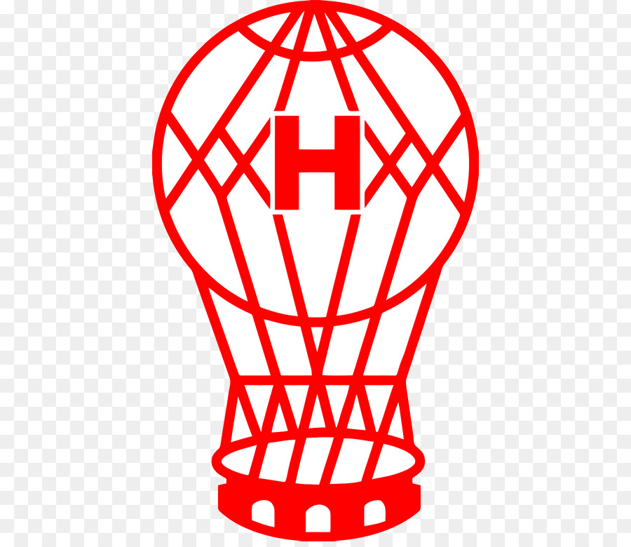
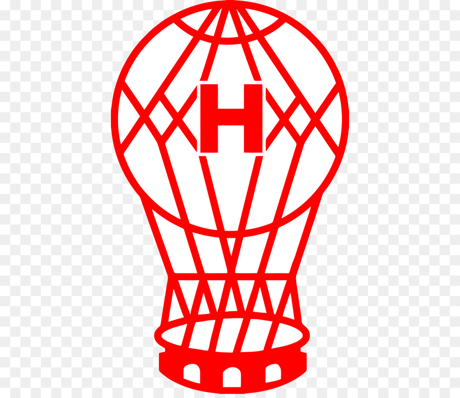
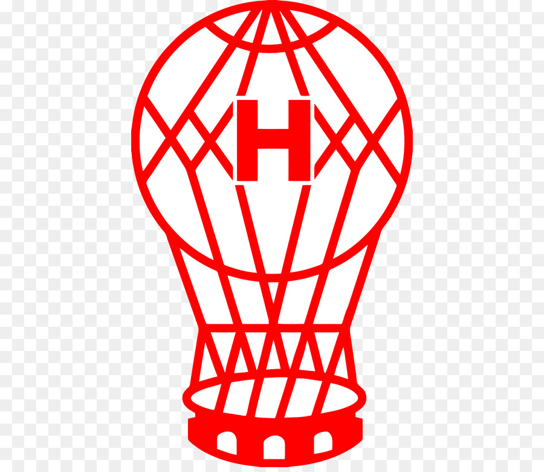

Se dice que el 25 de mayo de 1903, unos jóvenes de Nueva Pompeya fundan un Club de Fútbol bajo el nombre de “Verde esperanza no pierde” o “Verde esperanza y no se pierde”. Sin embargo, algunos afirman que dicho hecho ocurrió en 1907, pero no existe documentación para verificarlo. Siguiendo con la historia, se cree que estos jóvenes fueron hasta una Librería de la Av. Saenz, con la intención de comprar un sello de goma con el nombre del Club, pero no lo pudieron hacer.
Algunas narraciones suponen que no les alcanzó el dinero para tantas letras, otras sostienen que el librero “Richino” les recomendó un nombre más corto. Así fue, que en unas de las paredes había un almanaque con la leyenda “El Huracán” y los muchachos se decidieron a poner ese nombre. El primer sello del club fue “Club Uracan, calle Ventana 859“ , La falta de la letra “H” podría deberse a que el librero era de origen italiano y esa letra se usa sólo para ciertas formas del verbo, o por olvido.
El primer Presidente del Club fue Caimi, el Secretario Brunet y el Tesorero Tomas Jensalles. El 12 de noviembre de 1908 se realiza la segunda y definitiva fundación, cuya acta dice “Fundase en Buenos Aires con fecha de 25 de mayo de 1903 el Club Atlético Huracán y reorganizado el 1 de noviembre de 1908”, firmando como Presidente José Laguna y como Secretario Alberto Rodríguez. Quedando esta como fundación oficial de nuestro club.
A mediados de 1909 el Ingeniero Jorge Newbery pilotea por primera vez el globo aerostático “Huracán”, pero su mayor travesía la realiza el diciembre de ese año, cuando pilotea el mismo desde el Barrio de Belgrano hasta la Ciudad brasileña de Bagé.
Dicho hecho inspiró el distintivo del Club. En un acta de 1910 se deja constancia de que se usará camiseta blanca con la insignia del globo Huracán. En Mayo de 1911 la Comisión Directiva designo socio honorario a Jorge Newbery y lo convirtió en el primer Presidente Honorario.
Cuando el Club alcanza la categoría más alta del fútbol argentino en 1914, se el envía un telegrama al Ing. Newbery diciendo: “Hemos cumplido, el Club Atlético Huracán sin interrupción conquistó tres categorías ascendiendo a primera división como el Globo que cruzó las tres Repúblicas”
